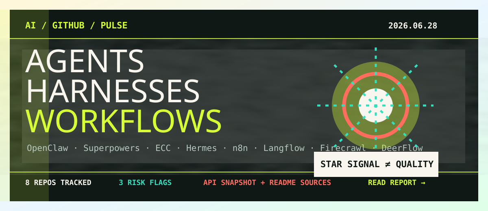

OpenClaw
跨消息通道的本地优先个人 AI 助手，强调 Gateway 控制面、常驻 daemon、配对和 DM 安全默认值。它代表个人代理从工具转向常驻入口。
本期追踪 6 月下旬仍在活跃的 AI 仓库：个人常驻代理、skills/harness 方法论、生产工作流平台与网页上下文层。star 记录注意力，不记录可靠性；真正要看的是权限、发布节奏、运行审计和失败可解释性。

AI 开源注意力正在从"模型聊天入口"转向可长期运行、可连接外部系统、可被团队治理的 agent 基础设施。最醒目的变化是 skills/harness 仓库快速升温，但这类仓库也最需要警惕 star 异常、供应链和方法论空心化。
star 为 2026-06-28 GitHub API/仓库页快照；趋势判断结合最近推送、release、README 信号与上期报告。由于 API 限流，本期不声称完整 7 日增星榜。
跨消息通道的本地优先个人 AI 助手，强调 Gateway 控制面、常驻 daemon、配对和 DM 安全默认值。它代表个人代理从工具转向常驻入口。
把 agentic skills 包装成软件开发方法论。值得关注的是团队如何把提示词资产升级为版本化技能、审查规则和协作协议。
v2.0.0 将项目定位为 agent harness operating system，覆盖 skills、session adapters、MCP inventory、worktree lifecycle 和 orchestrators。
定位为"the agent that grows with you"，处在 Codex、Claude、OpenAI、Anthropic、多代理和 OpenClaw 等生态关键词交叉处。
400+ integrations、native AI capabilities、可视化 + 代码、自托管和企业权限，说明 agent 能力会优先进入成熟自动化平台。
可视化构建 AI agents/workflows，支持 API 与 MCP server 暴露、RAG、多 agent 编排和 LangSmith/Langfuse 观测。
为 agent 提供 search、scrape、interact 的网页上下文 API，输出 Markdown、JSON、screenshots。网页数据质量会直接影响研究/RAG 可靠性。
从 deep research 扩展到 SuperAgent harness，包含 sub-agents、memory、sandbox、skills、message gateway、TUI 和 CLI-backed providers。
跨消息通道、网页和文件系统的 agent 必须默认最小权限、短期凭据、配对验证和可回放日志。
提示词、MCP 配置和工作流 JSON 应版本化、review、CI 校验，并和业务环境隔离。
连接器、SSO、审计、模板和部署形态，往往比单点模型能力更能驱动真实采用。
高 star 是注意力，不是质量证明；异常增长尤其需要结合 fake-star 风险研究审查。
本期多个仓库 star 数和创建时间组合非常醒目。报告把它们列为"值得跟踪的关注度信号"，不作为质量背书。任何引入都应继续检查许可证、提交历史、release 包、issue/PR 形态、依赖树、权限边界、安全默认值和长期维护能力。